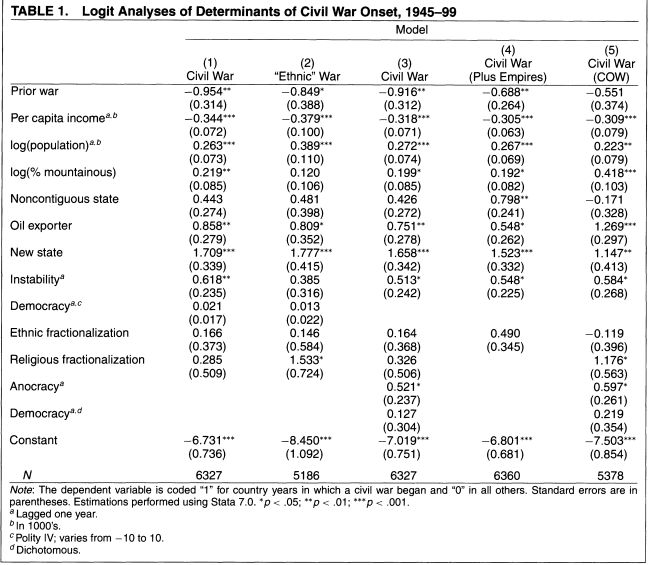

收录于合集
#国家建构与国家发展 70 个
#比较政治学 121 个
文献来源 ：James D. Fearon & David D. Laitin,“Ethnicity, Insurgency, and Civil War,” American Political Science Review , 2003, 97(1),pp.75-90.
作者简介：
James D. Fearon ，斯坦福大学政治学教授，主要研究领域是内战以及民族暴力，个人主页：http://fsi.stanford.edu/people/james_d_fearon
David D. Laitin，斯坦福大学政治学教授，主要研究领域是民族以及民族合作，内战的爆发和终结，个人主页：https://politicalscience.stanford.edu/people/david- d-laitin
理论与假设
**
**
本文是内战研究领域最具影响力的文献，成文于2003年，其谷歌学术统计的被引量是7336次。作为对比，成书于1966年的皇皇巨著《专制与民主的社会起源》的被引量是9269次。
本文的核心观点是：内战爆发最重要的原因并不是后冷战的结构或者族群宗教冲突，而是国家有利于叛乱发展的条件，即组织上与财政上的弱国家。这挑战了当时的普遍观点。其最大的贡献是建立了内战研究领域的“弱国家”范式，21世纪的许多内战文献都是对这一范式的回应。本文也是内战原因的三大解释路径“不满”、“贪婪”与“机会”当中关于“机会”解释路径的经典文献。
“不满”路径主要将国家内部冲突视作为一种对社会，经济及政治不平等的反应。相对应地，“贪婪”路径将内战视做个人追求物质利益最大化的结果。而“机会”路径则认为内战的动机不是那么重要，其认为内战的原因是存在促使行动者进行暴力对抗的机会。
冷战期间的现代化理论认为政治动荡是经济发展也即现代化的产物，现代国家和现代经济的发展为提高了社会动员的能力却不一定能促进民族认同；而将族群因素视作冲突根源的文化主义观点也一直存在，但直到苏东剧变其才成为主要的解释框架。基于此，文章提出了假设1,2,3，其也是“不满”路径的观点。
假设1：国家的族群以及宗教多样性与高内战风险正相关
假设2：族群多样性对内战风险的影响随着人均收入的提高而提高
假设3：少数族群数量大的情况下内战风险更大
_
_
“不满”的解释框架也包括经济以及政治上的不平等与歧视。而民主政体被视作消解不满的有效手段，也会带有更多的代表性以减少歧视性政策。更多的政治自由与平等的社会经济环境会有更少的内战风险，文章由此提出了假设4,5,6
假设4：政治民主以及社会自由和更低的内战风险相关
假设5：对特定语言及宗教群体的歧视性政策会提高内战风险
假设6：收入不平等提高内战风险
_
_
族群多样化很可能和族群冲突相关，而非内战，因此，族群性的内战很可能和至少有一个主要少数民族的情况有关，这与接下来的经验分析有关。
假设7：存在占人口5%以上的少数民族的国家内战风险更高
_
_
在45-99的内战当中，除了族群动员的内战之外，还存在着大量的“叛乱”性质的内战，这些内战多以游击战为主，为了解释这些内战原因，文章要找出政府反叛乱以及游击战持续下去的条件，叛军的招募能力与财政能力，这些都在“机会”的解释框架之下。文章由此提出了假设8-11。其中假设11是本文的核心假设。
假设8：恶劣的地形，糟糕的路况，远离国家权力中心的情况会增加叛乱和内战的风险。国外，跨境的避难所以及当地人口的接应也有助于叛乱事业的发展。
假设9：作为叛军弱点或力量的替代指标——叛军在给定政府反叛乱水平下被杀或被俘的几率——和一个国家发生内战的几率正相关。然而，高人均收入应当与更低的内战风险相关，应为(a)这是国家财政，管理，警察以及军事能力的替代指标(b)这也代表拥有更多路网的更发达国家以及被中央政权渗透更多的乡村社会。(c)不良的经济状况使得叛军能更好地征募人员。
假设10：叛乱与内战更容易在如下的政治与军事条件下发生
(a)一个新近独立的国家，突然失去之前的国外力量的支持，而其军事力量刚建立还未经检验
(b)中心地区的政治不稳定，可能表示了政治上的无序和脆弱，也是分离主义和夺取政权的叛乱的机会
(c)一个混合民主和专制特征的政权，可能表示各势力之间存在政治竞争，以及国家能力的下降（相反，纯粹的专制政权倾向于反映出对国家强制能力以及对于群体和个人的管理性权力的成功垄断）
(d)巨大的国家人口，使得中央需要更多代理层级来监控基层，也增加了给定收入下潜在叛乱群体的规模
(e)被距离以及地理阻断于国家中心的领土
(f)愿意为叛乱提供武器，金钱，以及训练的外国政府以及侨民
(g)支持高价低重货物——可可，鸦片，钻石，和其它可以在财政上支持叛乱事业的走私品
(h)一个财政资源主要从石油出口中汲取的国家。石油出产国更倾向于在给定收入条件下有一个更弱的国家机构。因为统治者有更弱的社会渗透以及建立复杂官僚系统来收税的需求。——一种政治上的“荷兰病”。与此同时，石油收入也提高了掌权的“价值”
假设11：在控 制人均收入后（或者其他国家能力的衡量方式），不论是政治民主，公民自由，高收入不平等还是非歧视的语言与宗教政策都和更低的内战几率无关，在正确的给定条件下，叛乱可以在没有强大，广泛的不满的情况下由一小群人发动，甚至是在民主政体之下。
__
实证分析
**
**
文章探讨的核心变量是内战的爆发，作者将因变量设置为虚拟变量“内战爆发”，将内战开始那一年的“国家- 年份”作为1，其他的情况则为0。进行了五个模型的多变量Logit回归，结果如下：

“之前的战争”是作为区分两场内战的控制变量，第一个模型是以几乎上文提到的所有自变量做Logit回归，但是剔除了反殖民战争。模型二则将因变量限定在编码为爆发族群战争的内战，也即是以族群为界限动员的内战。第三个模型是对于控制变量，检测其他变量以及稳健性检验。第四个模型是加入反殖民战争的结果。第五个模型是以COW数据来进行的稳健性检验。
在统计结果上人均收入的提高对遏制内战爆发的效果有强烈显著性，这种显著性在模型2中的族群性内战也依然很强，而族群和信仰的多元化却和内战的爆发的关系显著性很弱。在模型1当中加入大规模少数族群的虚拟变量以后，其并无统计显著性。民主也并非显著相关的因素，但是在模型3里，中间政体（Anocracy）和内战爆发有显著正相关关系。同样的模型中，歧视性政策，经济不平等，分割的国土以及国外支持上的结果都不显著，而新国家，政治不稳定，人口以及石油出口都有着比较显著的影响。
其他变量与稳健性检验
**
**
模型四将殖民帝国内的反殖民战争纳入到了数据当中，除了连续的领土意外并没有和上文的结果有较大区别。作者还将地区作为虚拟变量添加到模型3当中，但是并没有和之前的结果产生显著的变化。模型5则基于前人研究的COW（correlates of war）数据集进行了分析，也同样没有发现显著的变化。
结论
**
**
统计的结果不支持所有的“不满”假设，而支持所有的“机会”假设，其因果机制也在假设当中明确说明。
文章认为对于内战的爆发来讲，国家内部发生叛乱的条件以及经济因素是比政治自由，族群多元化，非歧视性政策等更有解释力的变量。作者认为民主，文化或者族群的同质性解释力较低是因为“族群性”的内战应当被视为叛乱的一种。九十年代突然增加的内战更多的是冷战期间两级对抗产生了一系列组织上和财政上的弱国家，文章认为之前学界发现经济因素与和平高度相关的因果机制是更好的经济状况使得国家能力健全，不利于叛乱的发生。作者认为， 不应该期待政治自由化、弥合民族冲突折冲消除“不满”的政策带来长久的和平，应当着力于消除“叛乱”发生的条件：促进经济增长以及建立高效廉洁的政府。
编后记
**
**
本文是比较重要以“机会”为解释路径的作品，但是这并不意味着其他解释路径效力的有限，在“不满”进路上，Collier, P. and Anke Hoeffler.2004." Greed and grievance in civil war. “Oxford Economic Papers 56(4): 563-595.的辩护或者说反应有很重要的地位（编注：此Collier并非本号经常介绍的那位），其被引是7556。甚至有学者以同一个数据得出了族群因素很显著的结论，见Quinn K。, Michael Hechter and Erik Wibbels.2003.Ethnicity, insurgency, and Civil War Revisited, unpublished paper (May 6 version).
文章也是最早将“资源诅咒”引入内战研究的经典文献。此点在本号所编译的另一篇文章当中有提及。（石油财富与民主）
如果关注世界银行和OECD的相关文件的话，他们确实在2004年以后有很多关注弱国家的报告。
本文主要关注与二战后至新世纪的内战状况，21世纪的内战发生了很大的变化，这些变化在Walter, Barbara F. 2017.“The New New Civil Wars.“Annual Review of Political Science 20: 469-486.中有比较多的提及，21世纪以来内战文献的主要发展，在近年的Cederman, Lars-Erik and Manuel Vogt. 2017.“Dynamics and Logics of Civil WarJournal of Conflict Resolution.” 61(9):1992-2016.当中有比较详细的论述。
有关于本文更全面的回顾与补充，请参见Miguel, E Shanker Satyanath and Ernest Sergenti.2004.“Economic shocks and civil conflict: An instrumental variables approach.“Journal of Political Economy 112(4): 725-753.该文同样也是有影响力的文献。
作者提供了可供Replication数据的下载地址：http://www.stanford.edu/group/ethnic/publicdata/repdata.zip
值得指出的是，本文数据质量很高，以至于批评者也难以否认。
事实上原文也限于篇幅没有详尽讨论操作化的问题，作者也就此写了一份补充材料：https://web.stanford.edu/group/ethnic/workingpapers/addtabs.pdf
文章信息量很大，编译工作基本上是挂一漏万，两位作者的合作也产生了许多高质量论文，建议有兴趣的读者进一步阅读。


政观
感谢您支持学术公益
微信扫一扫赞赏作者 __赞赏
已喜欢，对作者说句悄悄话
取消 __
发送给作者
发送
最多40字，当前共字
上一页 1/3 下一页
长按二维码向我转账
感谢您支持学术公益
受苹果公司新规定影响，微信 iOS 版的赞赏功能被关闭，可通过二维码转账支持公众号。